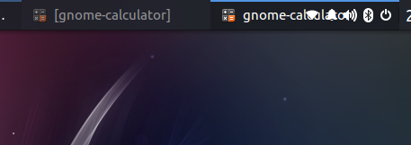

I've been trying this distribution all day and i like it so far, but here are some bugs and comments. First there should be an option to change the xdashborad shortcut, i use a lot the combination of ctrl+tab to navigate between tabs on firefox and now i cant do that, i disable the xdashboard shorcut on keyboard settings, because i was unable to change and here come the second bug that i found, it been many times when trying to change the settings of something and the button just seems not to be working or something, like wifi configuration. Also i put here a screenshot of what happend if you use the regular task list and you have a lot of windows open. I know is a beta so that why im putting this comment. Keep the good work.
